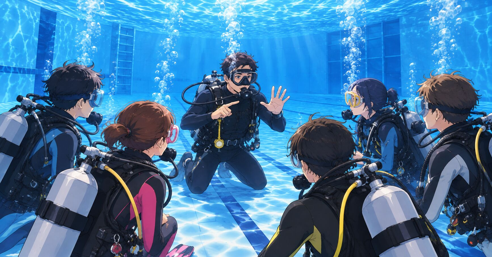

The road Orz passed by 2026 年 10 月
10 月 27 日 ( 火 )

Dive #236
Open Water の講習がよくできてるなと改めて思った話
ダイバーとしての再トレーニングを行いながら思うのは Open Water の講習ってよく出来てるなってことだったりする。
今回の再トレーニングではうまく行かないことが連続してるんだけど、うまく行かない理由を分析・解析していくと、最初の安定した状態がないから、ということを見出した。

図の①の安定状態がないから全てうまくいかない。
多くのインストラクターから元アシスタントインストラクターのくせに何いってんだ？って言われるかも知れないけれど、これ、実は少なくない数のインストラクターもおそらく気づいていない。
最初の安定状態がその後の講習やガイドダイブの全てを決定すると言っても過言じゃないと思う。
そして多くのインストラクター、ダイブマスター、アシスタントインストラクターがこのことに気が付かないのは、講習からガイディングから何もしなくても安定した状態からスタートするようなルーティングがもともと定着しているから。
大抵の場合、最初の安定した状態は意識すらされることなく達成されている。
なぜ施設でウエットスーツに着替えてしまうのか、なぜブーツも履いてしまうのか、なぜ水に入る前にウエイトを身につけるのか、なぜ水に入る前にスクーバユニットを背負うのか、なぜ水に入る前に BCD に吸気して浮力を確保しておくのか、なぜバディチェックを陸上で終わらせるのか、なぜ背の立つ水深でフィンを履き、マスクをつけ、スノーケルあるいはレギュレーターを咥えるのか、そのような普段無意識に行っているプロセスがなぜそのような順番になっているのかを深堀りしていくと、嫌でもこれらの順序は①の安全で安定した状態を最初に構築するためだということが理解できる。
そして例えばマスククリア。
①の安定した状態から水中でマスクの中に意図的に水を入れて意図的に②の段階に進む。課題による不安定化の段階に進むことになる。
そして③の段階としてマスククリアとうい基礎スキルを実施することで問題、マスク内への浸水と視界不良、そしてストレス状態を一気に解決する。
③による問題解決により④と①の安定状態に復帰する。
マスククリア一つ取ってみても①が前提になってるのは明白で、①が達成されていなければスキルを達成するためのルーティンがすでに崩壊している。
つまり講習になっていないことになる。
障がいを持つ者に対する講習やガイディングでは、そもそも日常的な習慣による①の自然構築は期待できない。指導側が受講側と共に協働して意識して計画・構築する必要がある。
そうしないと指導そのものが成立しなくなる。
そんなことを理解した 10 月 8 日だった。
Open Water の講習はよくできている。
- Category :
- #Records of Orz's Road
- #ダイビング
- #スクーバダイビング
- #アダプティブスクーバダイビング
- #障がい者スクーバダイビング
- #Open Waterのすごさ
- #習慣の凄さ
- #習慣の見える化
- #講習の円環構造